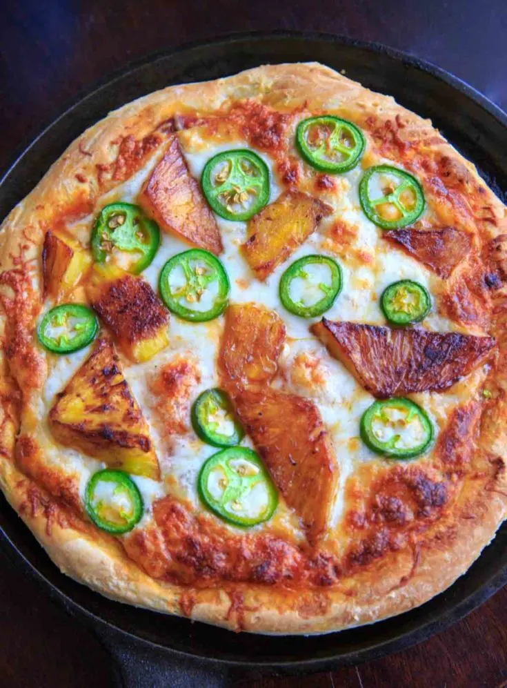

Grilled Spicy Pineapple Pizza

Here we have a lovely recipe that brings sweetness and heat in one dish!
If you are a fan of pineapple pizza (which I hope you are), then look no further! This pizza has it all. Spice for the crazy, sweetness for the... sweet!
It doesn't get any better than this one.
Plus, grilling the pizza adds a wonderful smokey aroma and flavor with each bite.
Ingredients
For the pineapple:
- 1 cup fresh pineapple, cubed (or 2-3 pineapple rings)
- 1 tablespoon olive oil
- 1 tablespoon honey
- 1/2 lime, juiced
- dash of hot sauce (optional)
For the pizza:
- 1 homemade pizza dough
- 1/2 cup marinara sauce
- 1/2 cup shredded mozzarella cheese
- 1 jalapeno, thinly sliced (remove seeds for less spice)
Steps
To make the pineapple:
- On a stovetop, heat oil in a cast iron pan on high heat.
- In a small bowl, cover the pineapple with honey, lime juice, and a dash of hot sauce and toss to coat.
- When oil is hot, cook on medium-high heat for 2-3 minutes each side. Set aside.
To make the pizza:
- Preheat oven to 475 degrees (or see notes for cooking pizza on the grill.)
- Roll out pizza dough to desired thickness and shape (I use a 10 inch cast iron pan.)
- Pour marinara sauce on and evenly coat the pizza dough with the back of a spoon or spatula. Top with shredded cheese.
- Add sliced jalapeno and grilled pineapple from step 1.
- Bake at 475 degrees for 12-15 minutes or until cheese is melted and crust is browned.